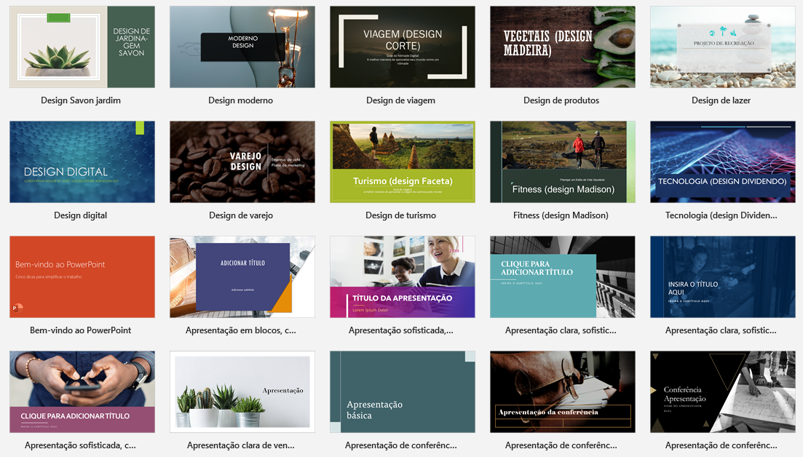
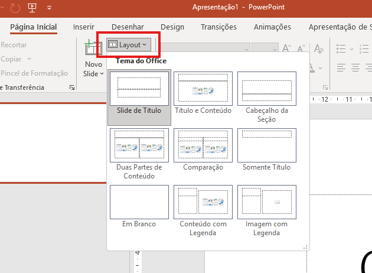
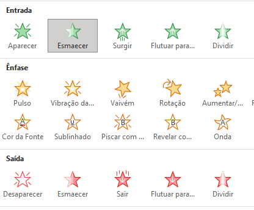

Você já abriu uma apresentação em branco e ficou paralisado sem saber por onde começar? Isso tem solução — e ela já vem embutida no PowerPoint.

Imagine que você vai construir uma casa. Você pode começar do zero, escolhendo cada tijolo, cada cor de parede e cada tipo de piso — ou pode partir de uma planta pronta e adaptar o que precisar. No PowerPoint, essa "planta pronta" se chama modelo (ou template).
Um modelo é um arquivo pré-configurado que já traz estrutura de slides, paleta de cores, fontes escolhidas e até exemplos de conteúdo. Ele existe para que você pule a fase mais frustrante — a da tela em branco — e chegue direto no que importa: o conteúdo.
Já o tema é um recorte menor dentro do modelo. Ele cuida exclusivamente da identidade visual: as cores, as fontes e os efeitos aplicados aos elementos. Pense no tema como o "estilo de roupa" da apresentação — dá pra trocar sem mudar a estrutura.
Curiosidade: O PowerPoint armazena os modelos no formato
.potx. A letra "x" no final indica que o arquivo usa o padrão moderno baseado em XML, introduzido no Office 2007. Antes disso, os modelos usavam o formato.pot— e muita gente ainda guarda arquivos antigos nesse formato por aí.
Para explorar os modelos disponíveis, acesse Arquivo → Novo. A galeria integrada tem dezenas de opções organizadas por categoria, e você ainda pode baixar mais diretamente do site da Microsoft ou de plataformas como Canva, Slidesgo e GraphicRiver.
Dica: Ao escolher um modelo, pense no seu público antes do visual. Uma apresentação para investidores pede sobriedade; uma aula para crianças pede energia. O modelo certo começa pelo contexto, não pela estética.

Layout é a forma como os elementos de um slide estão organizados: onde fica o título, onde vai o texto, se há espaço para imagem ou não. O PowerPoint oferece uma série de layouts prontos, e escolher o certo para cada slide faz uma diferença enorme na clareza da mensagem.
Os layouts mais usados são o Título e Conteúdo (o mais versátil), o Duas Partes (ótimo para comparações), o Slide de Título (para capas) e o Em Branco (quando você quer total liberdade criativa).
Na prática, escolha o layout com base em três perguntas simples:
Para aplicar ou trocar um layout, basta clicar com o botão direito no slide e selecionar Layout, ou acessar Página Inicial → Layout.
Dica: Use o Slide Mestre (Exibir → Slide Mestre) para criar layouts próprios e personalizados. É o nível avançado do PowerPoint — e vale muito a pena aprender.

Animações são como tempero: na medida certa, elevam a apresentação. Em excesso, estragam tudo.
A função das animações não é impressionar — é guiar a atenção. Quando você anima um elemento para aparecer no momento certo, você controla o que o público vê e quando vê. Isso é narrativa visual.
Curiosidade: Pesquisas em comunicação mostram que apresentações com animações excessivas são avaliadas como menos profissionais e mais difíceis de acompanhar. O cérebro humano gasta energia cognitiva para processar movimento — animações sem propósito literalmente cansam o público.
O PowerPoint organiza as animações em quatro tipos: Entrada (como o elemento aparece), Ênfase (chama atenção para algo já visível), Saída (como o elemento desaparece) e Caminho de movimento (o elemento se desloca pela tela).
Para animar com precisão, abra o Painel de Animação em Animações → Painel de Animação. Ele mostra todas as animações do slide em ordem de execução e permite ajustar tempo, duração e modo de início (Ao clicar, Com o anterior ou Após o anterior).
Algumas boas regras práticas para animações:
Dica: Combinações de animação + transição de slide criam uma experiência visual coesa. Escolha transições que conversem com o estilo das animações — suaves com suaves, dinâmicas com dinâmicas.